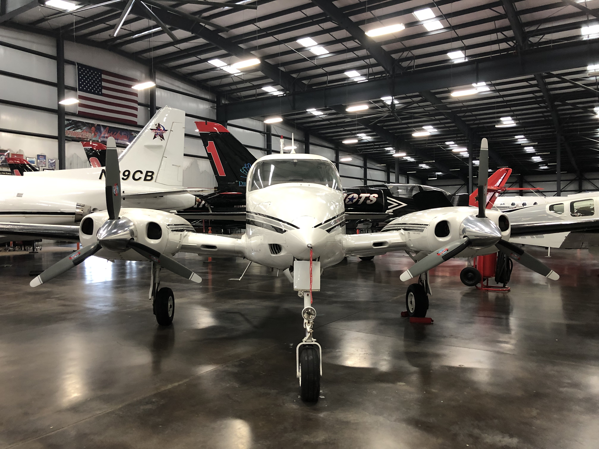
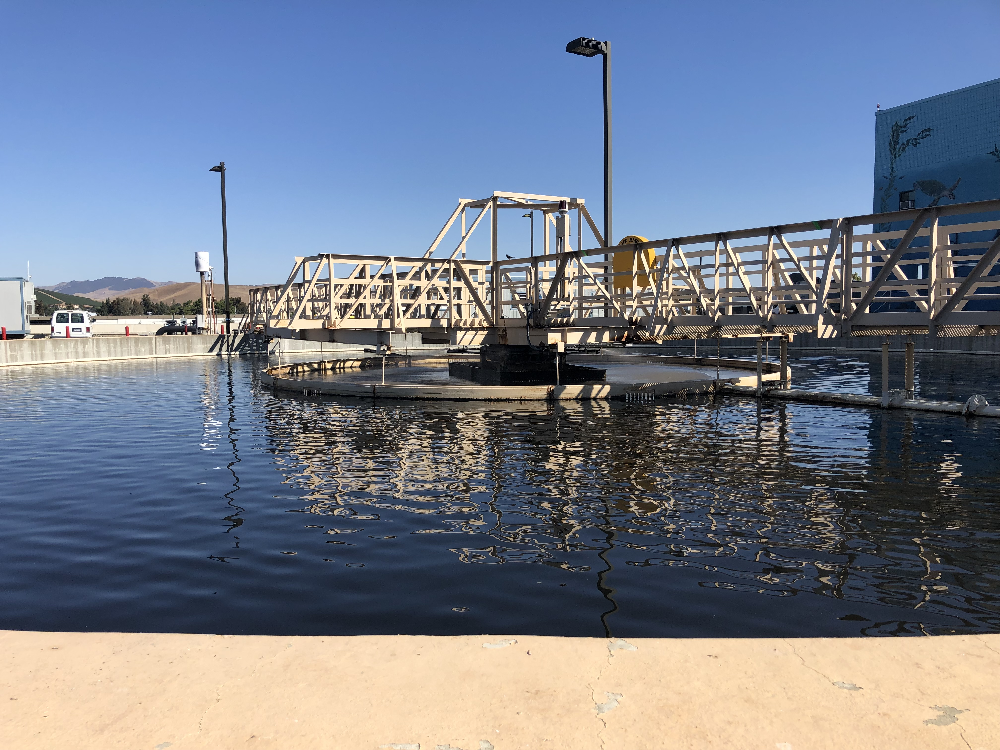
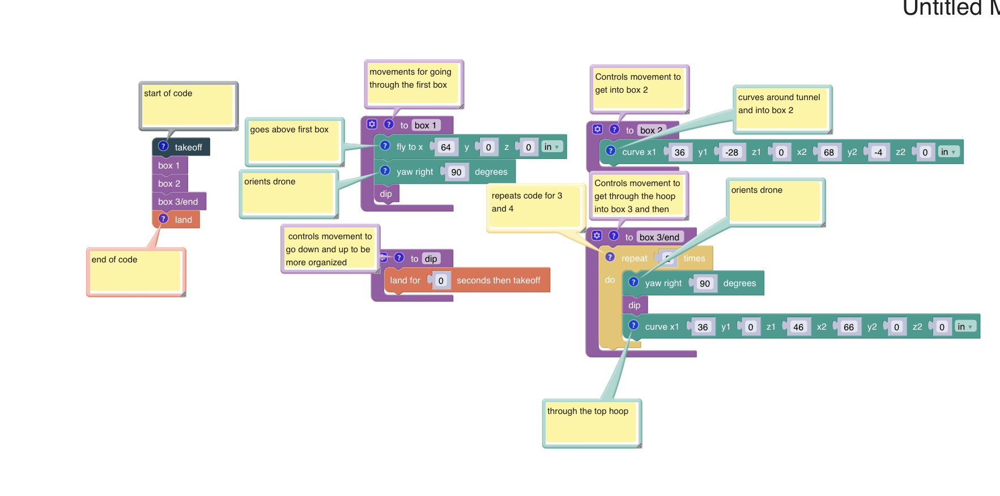
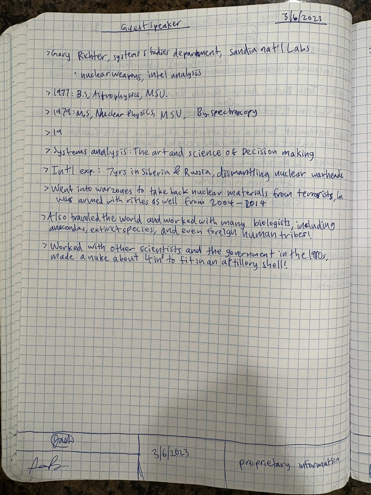
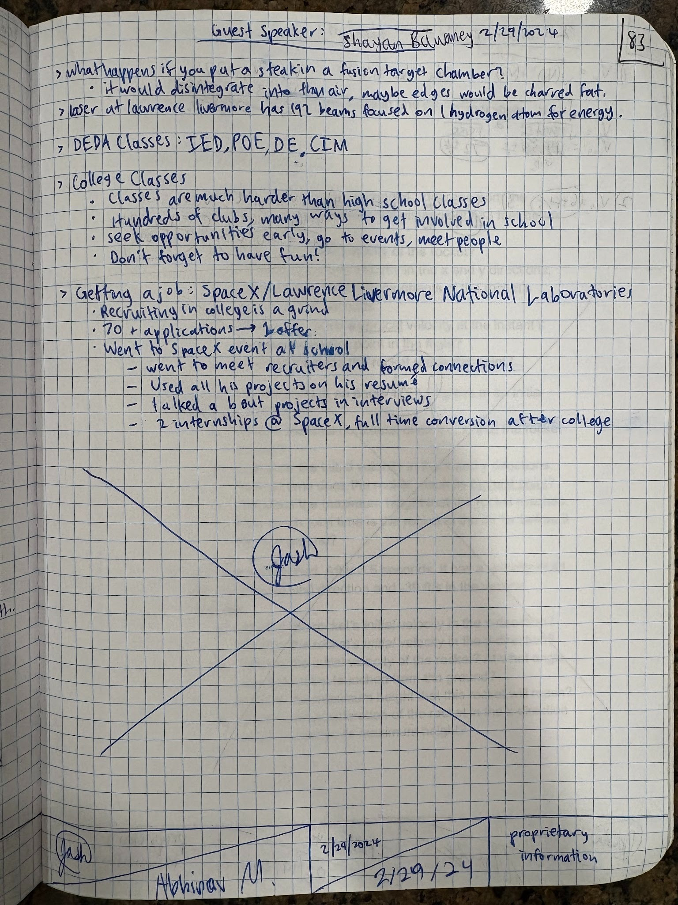

I have had the opportunity to network with many experts in the field while enrolled in the Dublin Engineering Design Program. I was able to learn a lot about different engineering career pathways through interesting guest speaker sessions and field trips. These interactions gave direct insights into the variety of opportunities accessible. Each interaction I had enhanced my knowledge of how engineering ideas are used in the real world, from mechanical engineering to useful practical advice. It also made me want to learn more about other professions. I want to use this job exploration page to showcase the wide range of employment options I've looked into and to record and consider the insights I've learned from these encounters.
Some of the great Guest Speakers I learned a lot from were Gary Richter from Sandia National Laboratories, Shayan Bawaney from SpaceX, Carrie Rodriguez and Michael Romero from BSK Associates Geotech, and Tanish Baranwal, a DHS alumni.
Additionally, I participated in a memorable visit to Lawrence Livermore National Laboratory, an experience that made me even more excited for pursuing a career in engineering. There I walked through their laser facility and also participated in an IT job shadow day. These activities provided direct exposure to the precision and complexity of large-scale scientific systems while demonstrating how information technology supports cutting-edge research in a professional setting.
Image Source: Jash Dadia's Camera
In the spring of 2024, I got to go on a field trip to the Patriot Jet Team Foundation, where I had the most fun and learning out of any field trip so far. The presenters provided a detailed explanation of aerodynamics, the fundamental science governing flight, while Mr. Dalibor of EXLABS delivered an insightful specialized presentation. Through engaging discussions with the staff, I learned how turbo engines, wing designs, materials, stress factors, and safety protocols are meticulously optimized. This clearly demonstrated that constructing a jet aircraft requires far more than raw speed; it demands advanced scientific principles and precise engineering design. Upon returning to class and continuing our kinematics unit, these real-world insights enabled me to fully comprehend concepts such as fluid dynamics and structural integrity, as I directly observed the practical effects of lift and drag on actual aircraft.

Image Source: Jash Dadia's Camera
In the fall of 2023, I visited the Livermore Water Treatment Plant, which made me even more interested in learning about engineering systems in different settings. The tour provided a comprehensive overview of the water treatment process, from the overall plant design to the specialized machines responsible for purifying the water. I also gained a clear understanding of the critical role that safety and efficiency play throughout the industry. Applying my knowledge of chemistry, I was able to analyze the specific chemical reactions used to remove toxins and impurities. I observed that every pipe, valve, and filter served a deliberate purpose, all centered on maximizing efficiency. Through thoughtful placement and precise engineering, the design minimized energy consumption while achieving the highest possible water purity.

Image Source: Jash Dadia's Camera
In the summer of 2023, I participated in a Drone Programming and Engineering Camp at Las Positas Community College, an experience that further reinforced my passion for engineering. Our team undertook the challenging task of designing and constructing a robust frame for our drone while also programming it to navigate through intricate obstacle courses. This project enabled me to apply my skills in design, teamwork, and programming in a practical setting. As we meticulously fine-tuned our creation, I experienced the thrill of creativity and the deep satisfaction of overcoming real-world technical challenges. Ultimately, our drone maneuvered gracefully through the courses, serving as a powerful testament to our collective effort and precise engineering.

Image Source: Jash Dadia's Camera
Guest Speakers
Gary Richter - Sandia National Laboratories (3/6/2023)

Shayan Bawaney - SpaceX (2/29/2024)

Carrie Rodriguez and Michael Romero - BSK Associates Geotech (3/25/2025)

{kind=link}